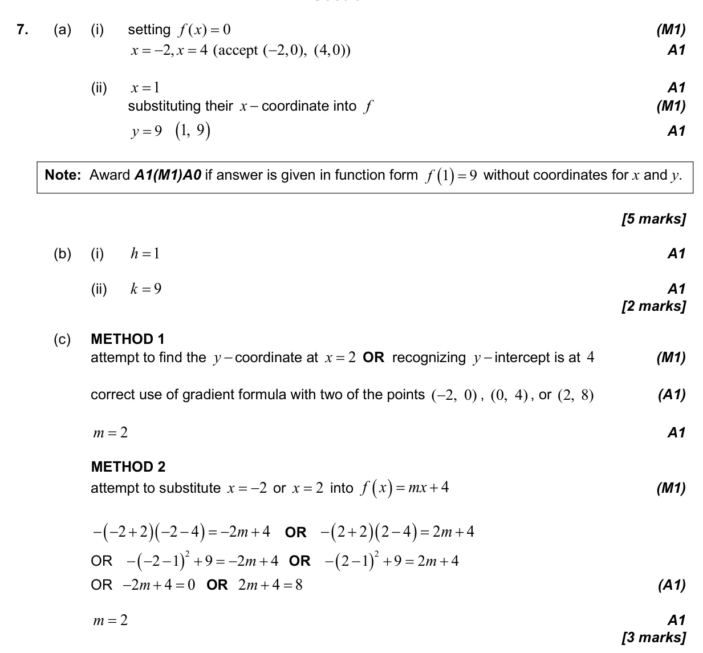
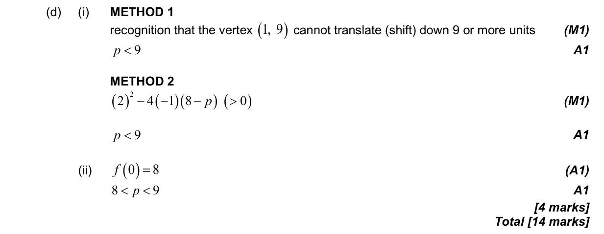

14 marks P1 TZ3 Section B No calculator 2.6 Quadratic function2.1 Equations of straight lines, parallel and perpendicular2.7 Solutions of quadratic equations and inequalities, discriminant and nature of roots2.10 Solving equations graphically and analytically Question Hide breakdown abcd Markscheme 